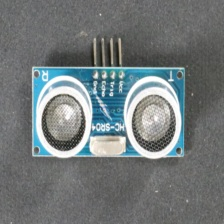
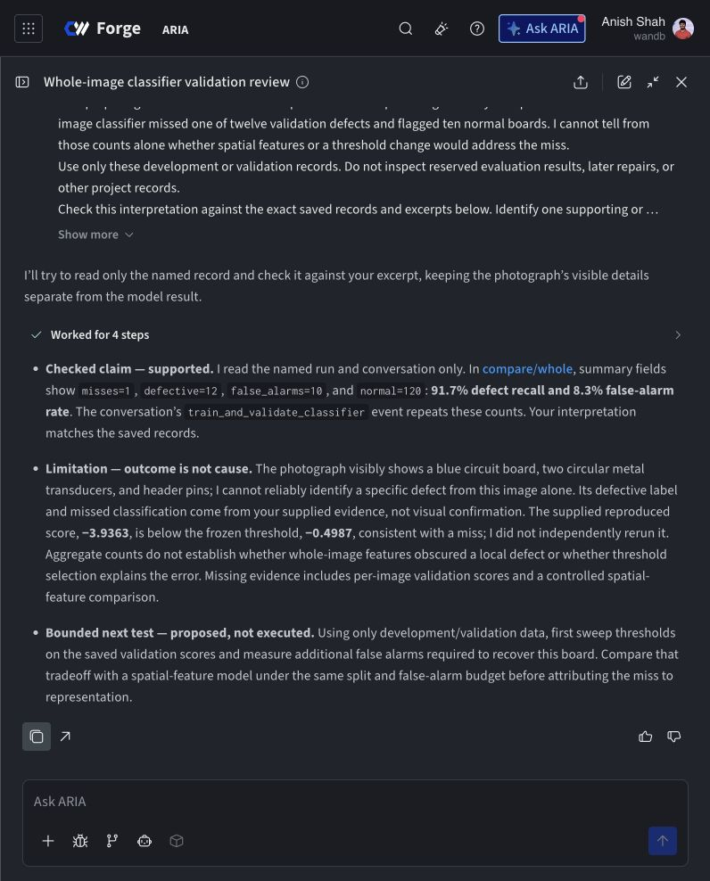
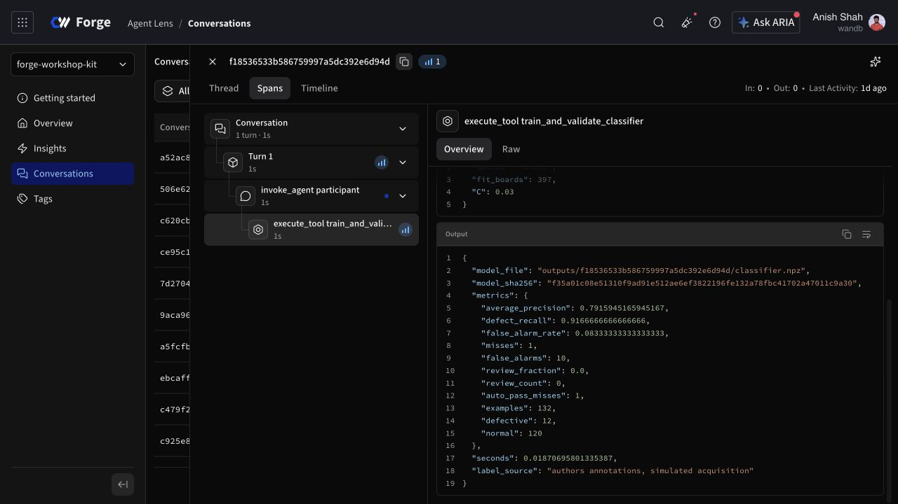

Visual Inspection / Investigate this result
Recorded instructor investigation. These are saved instructor records, not the outcome of an unexecuted participant edit.
The validation photograph pcb1-anomaly-086.jpg was attached through the native Add images control. The exact prompt supplied run/conversation URLs, aggregate validation excerpts, and a score reproduced locally from the saved model; no native run attachment was selected. ARIA retrieved only the named run and conversation and confirmed aggregate counts. It described visible image content but did not identify the defect, independently verify its label, or rerun the score.
Open the actual ARIA conversation · Check the supplied source values offline
Exact submitted prompt
I am preparing an instructor-recorded inspection workshop investigation. My interpretation: The whole-image classifier missed one of twelve validation defects and flagged ten normal boards. I cannot tell from those counts alone whether spatial features or a threshold change would address the miss.
Use only these development or validation records. Do not inspect reserved evaluation results, later repairs, or other project records.
Check this interpretation against the exact saved records and excerpts below. Identify one supporting or contradicting observation and cite the record, field, or event. Separate observations from possible causes; state missing evidence. Do not change code or settings, launch experiments, update project memory, or create automations. Analysis only.
Records: [{"stage_id":"f18536533b586759997a5dc392e6d94d","stage_name":"compare/whole","trace_url":"https://forge.coreweave.com/agent-lens/wandb/forge-workshop-kit/conversations/f18536533b586759997a5dc392e6d94d","run_url":"https://forge.coreweave.com/wandb/wandb/forge-workshop-kit/runs/f18536533b586759997a5dc392e6d94d"}]
Saved evidence excerpts: {"validation_metrics":{"average_precision":0.7915945165945167,"defect_recall":0.9166666666666666,"false_alarm_rate":0.08333333333333333,"misses":1,"false_alarms":10,"review_fraction":0.0,"review_count":0,"auto_pass_misses":1,"examples":132,"defective":12,"normal":120},"settings":{"method":"whole","C":0.03,"review_budget":0},"feature_contract":"Frozen ImageNet ResNet-18; 512 whole-image values; supplied defect masks are inspection aids, not classifier inputs. The aggregate validation metrics below are supplemented by the attached validation photograph and its separately reproduced score."}
Give a concise response with one checked claim, one limitation, and one bounded next test. If you cannot read a linked record, say so and base any interpretation explicitly on the supplied excerpt.
The attached photograph is validation image pcb1-anomaly-086.jpg. A free forward pass using the saved whole-image model reproduces score -3.9363274574, below its frozen threshold -0.4987401962, so this defective board was missed. The supplied defect mask is an inspection aid and was not a model input; no mask is attached. Distinguish what you can see in the photograph from what the score and classifier establish.
Please retrieve the named records read-only if the available tools support it. If they do not, state that limitation. Keep the response under 220 words.Actual ARIA response
Instructor citation check
supported: The whole-image validation run missed one of twelve defective boards and flagged ten of 120 normal boards.
Saved compare/whole metrics contain misses=1, defective=12, false_alarms=10, and normal=120. This gives defect recall 11/12 and false-alarm rate 10/120, matching the native run and training-call values quoted by ARIA. The attached board and supplied score do not establish that representation caused the miss; ARIA correctly left the cause unresolved.
Images attached to this question

Open the checked record in Forge


- Errors at the frozen threshold
- Validation denominator